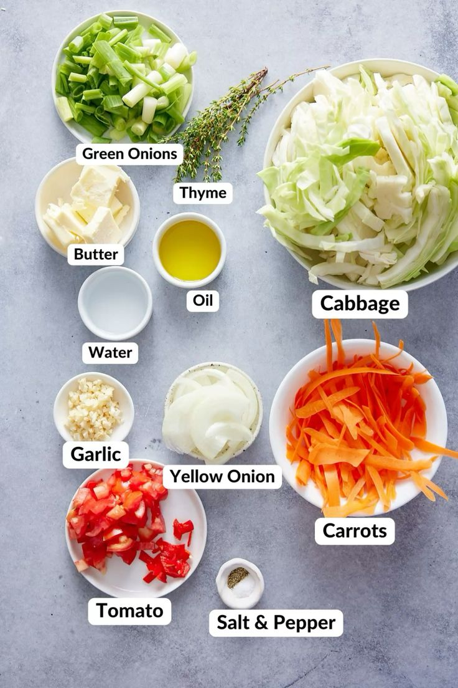
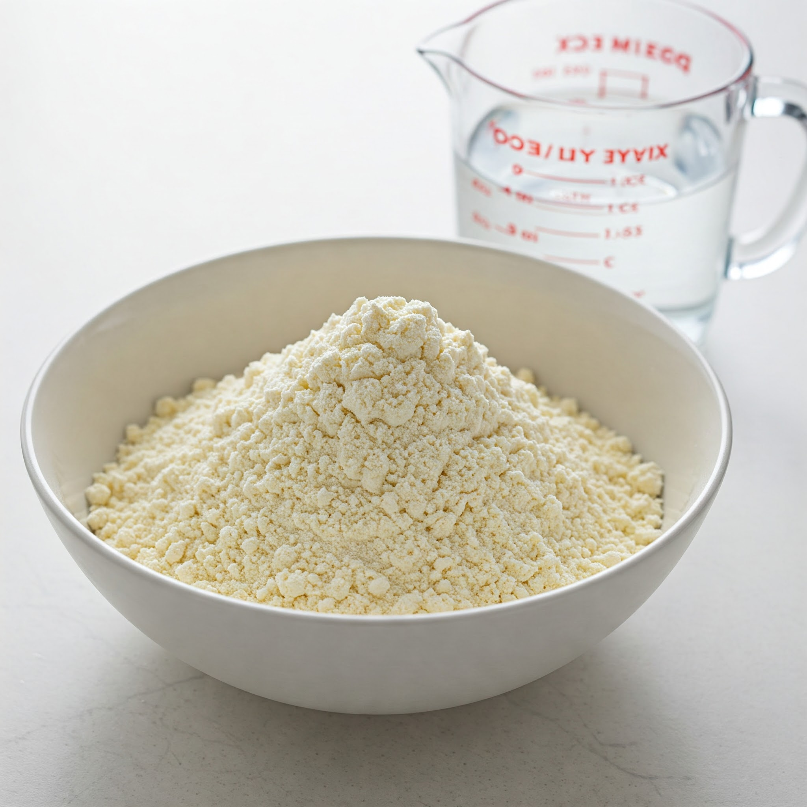
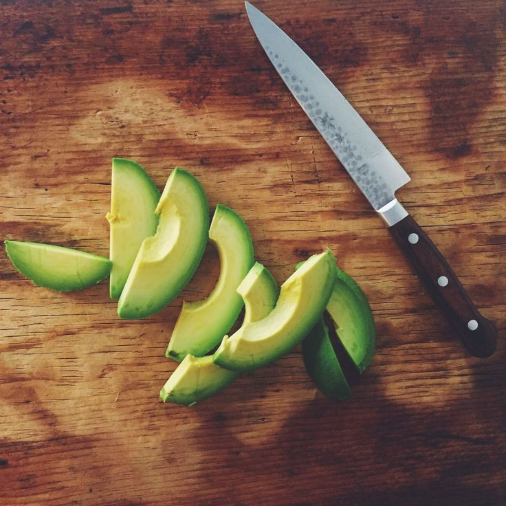
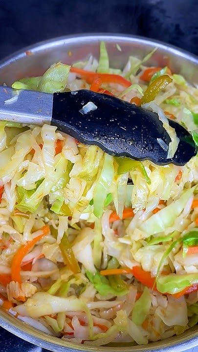
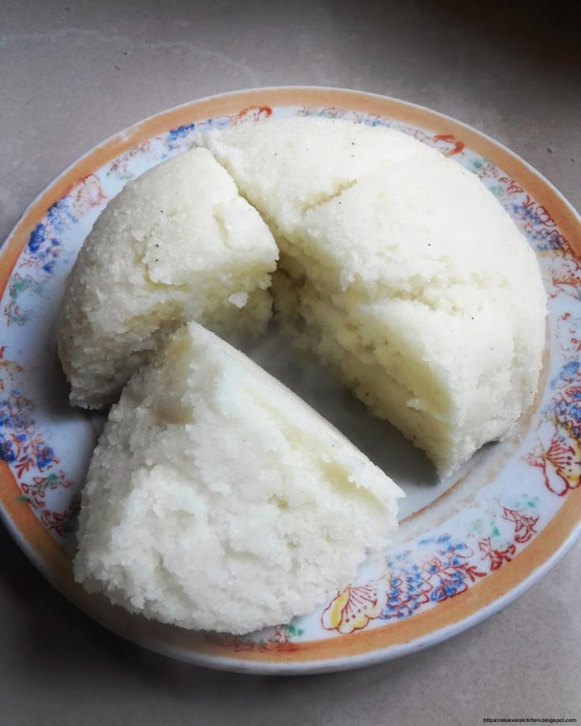
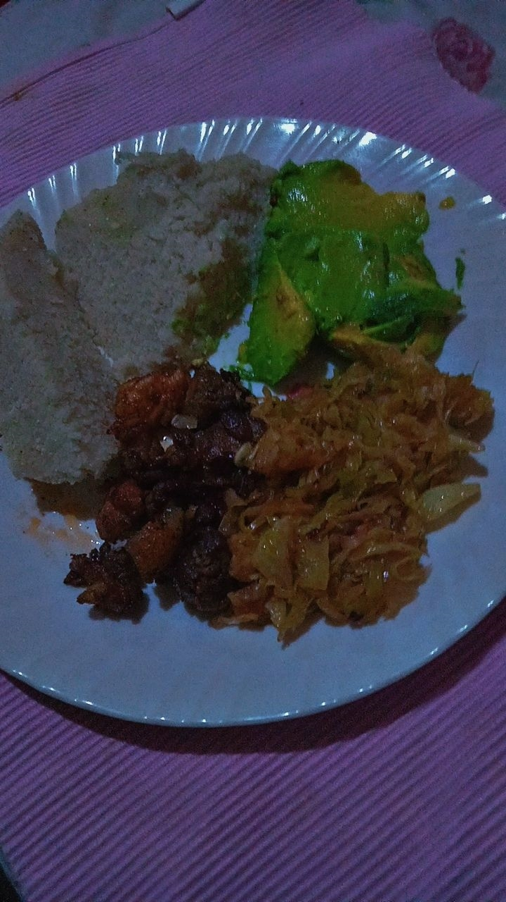

Cabbage with Ugali, served with Avocado:
ingredients
-For the Cabbage:
- Cabbage: 1 medium-sized, shredded.
- Onions: 1-2 medium-sized, finely chopped.
- Tomatoes: 2-3, diced or blended.
- Garlic: 2-3 cloves, minced (optional).
- Carrots: 1-2, grated (optional, for added flavor and color).
- Cooking Oil: 2-3 tablespoons.
- Salt: To taste.
- Spices (optional): Curry powder, black pepper, or chili flakes for extra flavor.

-For the Ugali:
- Maize Flour (Cornmeal): 2-3 cups (adjust based on servings).
- Water: About 4 cups.
- Salt: Optional, to taste.

-For the Side:
- Avocado: 1-2, sliced.

-This combination makes for a hearty and balanced meal.😊
instructions
Here are step-by-step instructions to prepare cabbage with ugali and serve it with avocado or bananas:
-Cabbage:
Prepare the Ingredients:
- Shred the cabbage, chop the onions, dice or blend the tomatoes, and optionally grate the carrots and mince the garlic.
- Sauté the Onions:Heat 2-3 tablespoons of cooking oil in a pan. Add the chopped onions and sauté until golden brown.
- Add Tomatoes and Garlic:Stir in the diced or blended tomatoes and minced garlic (if using). Cook for 2-3 minutes until the tomatoes form a thick paste.
- Cook the Cabbage:Add the shredded cabbage and grated carrots to the pan. Stir well to combine with the tomato mixture.
- Season:Add salt to taste and any optional spices (like curry powder or black pepper). Mix well.
- Simmer:Cover the pan and let the cabbage cook for about 5-7 minutes on medium heat. Stir occasionally. Ensure it remains slightly crunchy for better texture and taste.
- Final Touch:Taste and adjust seasoning. Set it aside once ready.

-Ugali:
- Water:In a pot, bring about 4 cups of water to a boil.
- Add Maize Flour:Reduce the heat slightly and start adding maize flour gradually while stirring continuously with a cooking stick (mwiko).
- Mix and Cook:Keep stirring to prevent lumps. Adjust the amount of flour to achieve a thick consistency.
- Firm Up:Once the ugali is firm, press it down and let it cook for 3-5 minutes on low heat.
- Serve:Shape the ugali into a round form or cut it into slices for serving.

-Serve with Avocado:
Slice the avocado and serve it fresh alongside the cabbage and ugali. Alternatively as a natural sweet complement to the meal.
